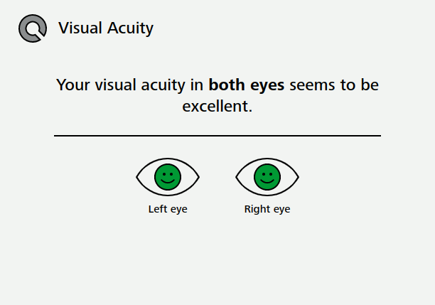
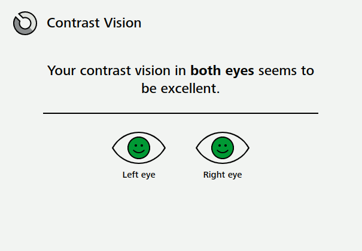

O teste realizado tinha como objetivo averiguar a qualidade da visão do usuário ao submete-lo a uma um teste bem simples.
Uma imagem era exibida na tela com um pedaço faltante. Com isso, o usuário deveria selecionar qual era o pedaço faltante na imagem que ele viu.
Apesar de simples o teste não foi fácil de ser realizado. Quando as imagens estavam muito pequenas era muito difícil ter certeza de qual era o pedaço faltante, e mesmo com o resultado positivo ainda errei algumas opções.
O teste realizado tinha como objetivo averiguar a qualidade do contraste na visão do usuário ao submete-lo a uma um teste bem simples.
Uma imagem era exibida na tela com um pedaço faltante. Com isso, o usuário deveria selecionar qual era o pedaço faltante na imagem que ele viu.
Diferente do teste anterior, o desafio agora não era o tamanho da imagem mas o seu contraste com o fundo. Em muitos momentos a imagem quase não era visível na tela e a escolha era quase impossível. Além disso, quando chegava no final do teste o foco da visão diminuía, sendo necessário focar novamente.
